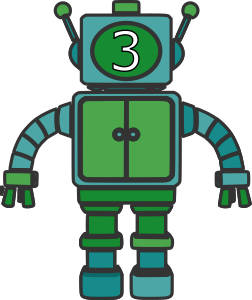

Stratégie gagnante
Récapitulatif
Si tu as bien suivi, tu sais maintenant que notre armée de robot est capable de renforcer ses coups gagnants pour les jouer plus souvent. Cet apprentissage par renforcement révèle son plus grand atout sur un grand nombre de parties...
Laissons notre armée de robot jouer pendant plusieurs dizaines de parties et interrongeons la.
Robot 5 :

"Bzzzt... Les jetons qui me font le plus gagner sont  et
et  ."
."
Robot 4 :

"Bzzzt... Le jeton qui me fait le plus gagner est  ."
."
Robot 3 :
"Bzzzt... Le jeton qui me fait le plus gagner est ."
Robot 2 :

"Bzzzt... Le jeton qui me fait le plus gagner est ."
Tu peux toujours essayer de jouer contre elle si tu n'es pas convaincu !
Jouer contre l'arméeConclusion
A travers cette activité, tu as normalement pu comprendre le principe de stratégie gagnante grâce à l'apprentissage du renforcement. Nous avons ici choisi l'exemple du Jeu de Nim, mais cette méthode est applicable à pleins d'autres jeux !
Tu peux retourner aux étapes précédentes à l'aide des boutons présents en bas de la page ou sur le menu de gauche si tu n'as pas compris quelque chose. Sinon, te voilà au terme de cette activité ! Nous espérons qu'elle t'a plu et que tu deviendras maintenant imbattable au jeu de Nim.